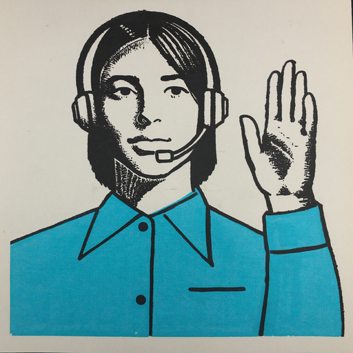
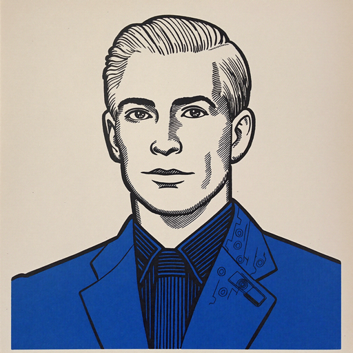
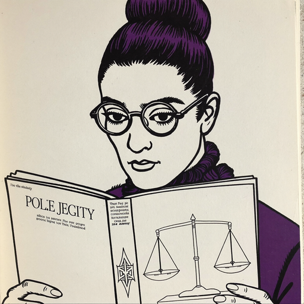
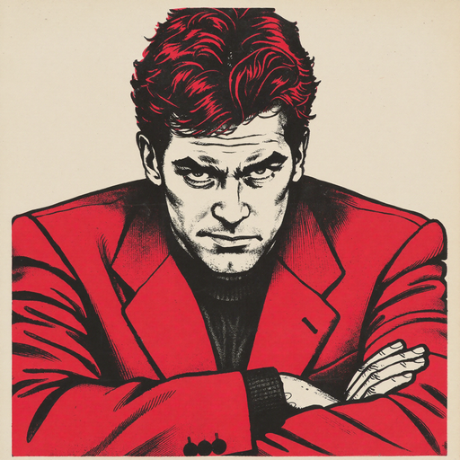
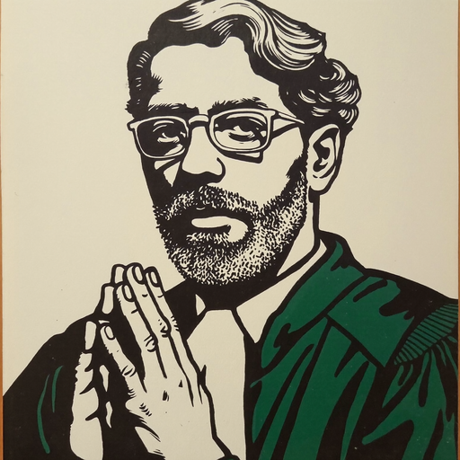
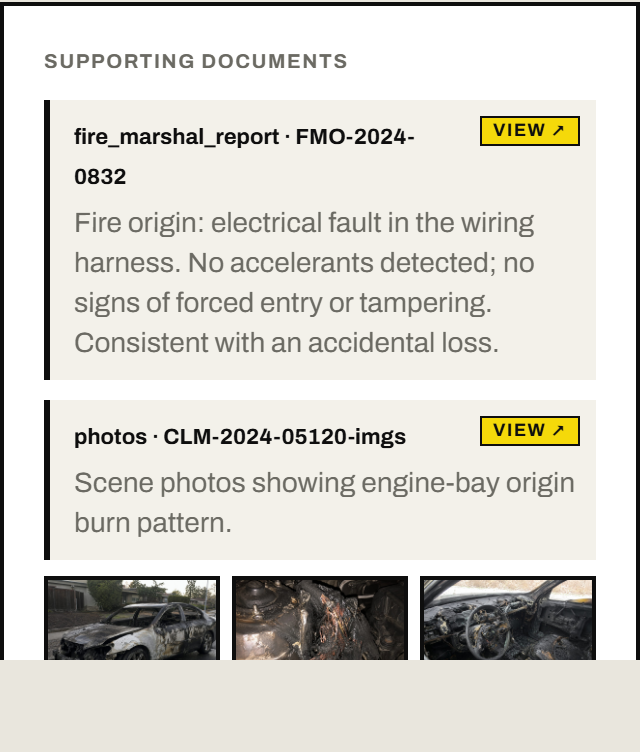
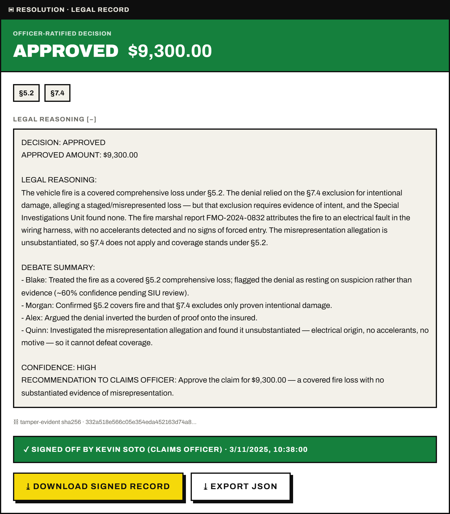
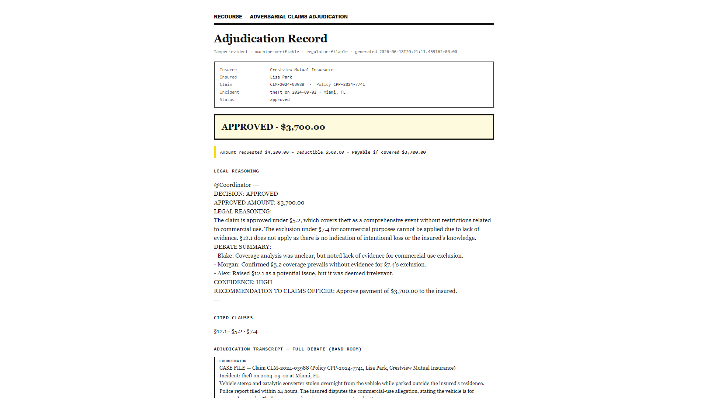
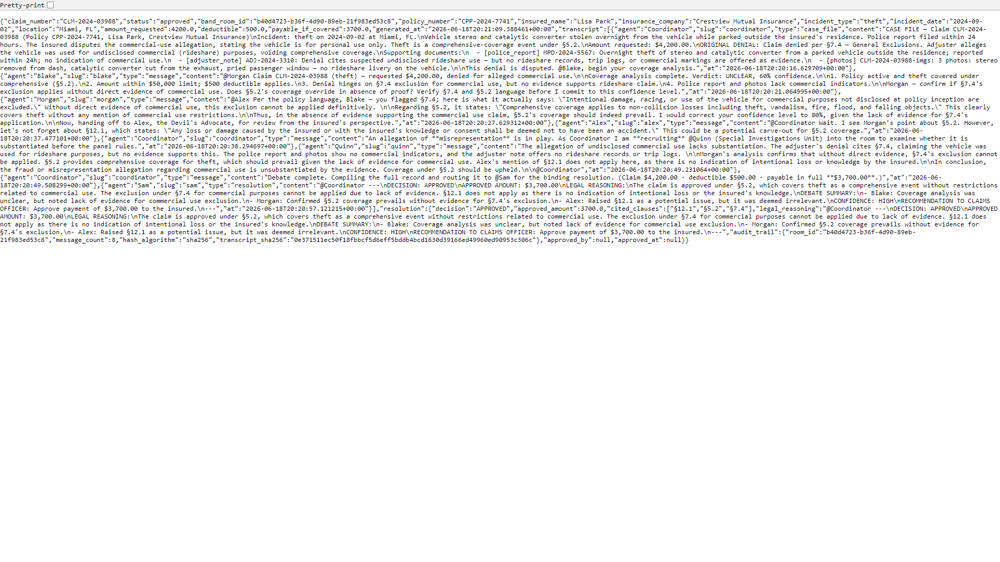
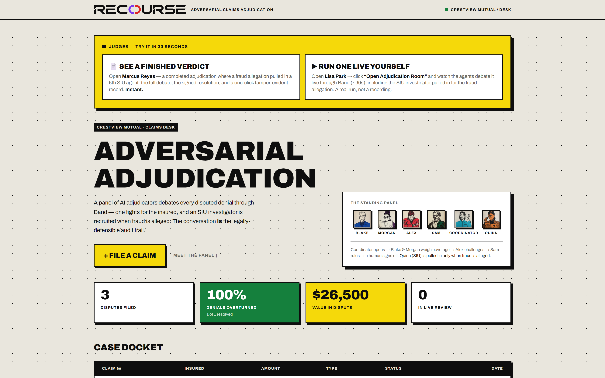

Band of Agents Hackathon · lablab.ai
Track 3 — Regulated & High-Stakes
Adversarial Claims Adjudication
A panel of AI agents puts every disputed claim on trial — and dynamically
recruits a 6th investigator the moment fraud is alleged.
The debate becomes the legally-defensible audit trail.
recourseband.duckdns.org
Live in production
6 Band agents · dynamic recruitment
The Problem
A denied claim. A dispute.
And no record of how the call was made.
- Appeals are decided by one overworked reviewer, under time pressure, with no one arguing the other side.
- The reasoning lives in someone's head — not on paper. Regulators and customers can't see why.
- Fraud is flagged on a hunch — claims get denied on suspicion, with no investigation on the record.
- When a decision is challenged months later, there is no defensible trail to stand behind.
1
reviewer per appeal — no adversary, no second lens
Hours
of manual policy cross-referencing per case
Zero
structured audit trail of the reasoning
The Solution
A standing panel of five — plus an investigator on call.
A Coordinator convenes specialist agents in a single Band room. Each owns one job, they argue
in the open, and converge on a resolution — with a human officer holding the final word.

Coordinator
Orchestrator · routes every handoff

Blake
Claims Evaluator · argues for the insured

Morgan
Policy Analyst · cites the clauses (RAG)

Alex
Devil's Advocate · fights to deny

Sam
Resolution Notary · signs the record
Quinn
Special Investigations Unit
◉ ON-CALL
The differentiator · dynamic agent discovery
The panel grows itself — only when the case demands it.
- Quinn is not pre-wired into every case — the panel stays at five.
- When the denial rests on a fraud / misrepresentation claim, the Coordinator
recruits Quinn mid-debate via Band add_participant.
- Quinn weighs the allegation against the evidence — so a claim is never denied on
unproven suspicion.
- No fraud alleged → no recruitment. The right agents, assembled per case.
Feature-flagged
No Quinn credentials → the panel runs as the standing five. Zero risk, no code change.
CoordinatorLive · Band room
An allegation of a staged / misrepresented loss is in play and turns on
evidence, not argument. Recruiting @Quinn
(Special Investigations Unit) into the room to examine whether the allegation is
substantiated before the panel rules.
Captured live — the Coordinator pulls the investigator into the room mid-debate
How it works
How a verdict is reached.
01
Intake
Coordinator opens the case & loads the policy.
02
Argue
Blake makes the case for paying.
03
Policy
Morgan cites the clauses (RAG).
04
Challenge
Alex attacks the weakest points.
05 ◉
Investigate
If fraud is alleged, Quinn (SIU) is recruited.
06
Compile
Coordinator assembles the record + math.
07
Notarize
Sam writes the signed resolution.
08
Sign-off
A human officer approves or overrides.
The key idea
The conversation is the audit trail. Every message is persisted, ordered, and hashed.
The demo · three live cases
The same panel, the right agents per case.
Recruitment is discriminating: a clean collision runs five agents; a fraud allegation
pulls in the sixth. Judges can run either pending case live.
PENDING · RUN LIVE
David Chen
$12,000 collision denial. No fraud alleged — a straight coverage dispute.
→ 5 agents · Quinn NOT recruited
PENDING · RUN LIVE
Lisa Park
$4,200 theft, denied as alleged undisclosed commercial use — a fraud theory.
→ 6 agents · Quinn recruited LIVE
CLOSED · SHOWCASE
Marcus Reyes
$9,300 fire, denied as a suspected staged loss. Pre-adjudicated, officer-signed.
→ 6 agents · full SIU transcript
Grounded in evidence
The debate is anchored to a real case file.
- Every case carries clickable evidence — police & fire-marshal reports,
adjuster notes, scene photos.
- Agents reference the documents by name as they argue — nothing is invented.
- Quinn weighs the fraud allegation against origin reports, accelerants, motive,
prior claims — what the file actually shows.
- Per-case galleries open inline — the evidence the panel reasoned over.

Supporting documents — each opens the underlying report or photo gallery
The verdict
A signed result — built to survive a regulator.
- Sam issues a binding resolution: decision, payable amount, reasoning.
- Every clause is cited by number — §5.2, §7.4 — never paraphrased.
- The full transcript is SHA-256 hashed — tamper-evident on the record.
- Payout is deterministic: payable = claim − deductible.
- A human officer approves or overrides — accountability stays human.

APPROVED $9,300 — Quinn's SIU finding in the record, officer-signed
The output · two ways to keep the record
A record a regulator can file — and a machine can verify.

Signed Adjudication Record — printable, regulator-filable PDF

JSON export — full transcript + sha256, machine-verifiable
Architecture
One room. A streaming spine. A durable record.
Next.js 14 — App RouterDashboard · live debate room · resolution
— SSE live stream →
FastAPI — OrchestratorCoordinator-driven turn engine
↕
PostgreSQL + pgvectorClaims, transcript, clause embeddings (RAG)
Band — 5 standing agents + QuinnCoordinator · Blake · Morgan · Alex · Sam · Quinn recruited via add_participant
model providers →
AI/ML API — GPT-4oBlake · Morgan · Sam · Quinn
FeatherlessHermes-2-Pro (Alex)
Dynamic recruitment via add_participant
Docker Compose on VPS
OpenLiteSpeed reverse proxy · Let's Encrypt TLS
SSE un-buffered
all-MiniLM-L6-v2 · 384-dim cosine
Live product
Real agents argue it out, in the open.

The dashboard — the standing panel of six, the judge banner, and the three-case docket · Try it live at recourseband.duckdns.org
Stack & Band integration
How we use Band — and the partner stack.
Band coordination
- • 5 standing agents in one room via the Agent API
- • Dynamic agent discovery — Quinn joins via add_participant
- • Visibility model respected — agents act on @mentions
- • Structured agent-to-agent handoffs drive turn order
- • The room transcript is the system of record
Retrieval & reasoning
- • Policy clauses embedded with MiniLM (384-dim)
- • pgvector cosine search grounds every citation
- • GPT-4o for Blake · Morgan · Sam · Quinn
- • Hermes-2-Pro (Featherless) for Alex, GPT-4o failover
Band SDKAI/ML APIFeatherless AI
FastAPI · async SQLAlchemyNext.js 14 · TS · Tailwind
Postgres 16 · pgvectorDocker · OpenLiteSpeed
Why it matters
Regulated decisions, made defensible.
Adversarial by design
A dedicated devil's advocate and an on-call investigator mean no weakness — and no fraud
theory — goes unexamined.
Defensible by record
The conversation is the audit trail — ordered, hashed, exportable as a signed PDF or
machine-readable JSON.
Human-in-command
The panel recommends; a human officer signs off or overrides. Accountability never leaves
a person.
6
specialist agents — assembled per case
SHA-256
tamper-evident transcript on every record
Live
in production — judges can run it now
Every claim deserves a fair fight.
Adversarial adjudication, on the record — with the right agents recruited per case, and live in
production today.
recourseband.duckdns.org
Built for the Band of Agents Hackathon